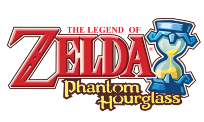
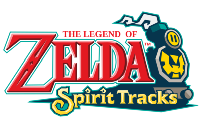

Le jeu commence avec Link, un jeune garçon vivant sur l'île du printemps. Il rêve d'aventures et aspire à devenir un héros, tout en se souciant profondément de sa sœur, Aryll. Lorsque cette dernière est enlevée par un oiseau géant, Link se lance à sa recherche. En chemin, il rencontre Tetra, une jeune pirate audacieuse, qui devient son alliée. Ensemble, ils découvrent que Ganondorf est de retour et qu'il cherche à s'emparer de la Triforce, une source de pouvoir immense. Link doit naviguer à travers un vaste océan , explorer diverses îles, résoudre des énigmes et récupérer des morceaux de la Triforce avec l'aide du lion rouge, un bateau qui parle et qui s'avère être le roi d'hyrule. Le jeu culmine dans une bataille épique contre Ganondorf, où Link doit utiliser toutes ses compétences et son courage pour sauver sa sœur et protéger le monde.
Après les événements de The Wind Waker, Link et Tetra naviguent sur les mers à la recherche de nouvelles terres. Lors de leur voyage, ils découvrent un mystérieux vaisseau fantôme qui attaque leur bateau, ce qui entraîne un naufrage. Tetra est capturée par le vaisseau, et Link doit se lancer à sa recherche. Link se réveille sur une île appelée l'île de l'aventure, où il rencontre une fée nommée Ciela, qui l'aide dans sa quête. Pour sauver Tetra, Link doit explorer le monde, résoudre des énigmes et combattre des ennemis. Tout au long de son voyage, Link visite plusieurs îles et découvre la légende de la déesse de la mer et d'un ancien temple. Il doit également affronter le maléfique Bellum, le boss principal qui se cache derrière l'enlèvement de Tetra. Link et Ciela travaillent ensemble pour déjouer les plans de Bellum, récupérer des objets magiques et restaurer la paix dans le royaume. Le jeu se termine par une confrontation avec Bellum, où Link doit prouver son courage et sa détermination pour sauver Tetra et retourner chez eux.
Des années après les événements de Phantom Hourglass, Link (un autre) se réveille dans un monde où le royaume d'Hyrule est désormais relié par des chemins de fer. En tant qu'apprenti conducteur de train, il aspire à devenir un véritable héros. Link fait la connaissance de la princesse Zelda, qui, dans cette aventure, a perdu sa forme physique et a été transformée en esprit. Ensemble, ils découvrent que le royaume est menacé par un mal ancien, le Maléfique, qui cherche à ressusciter le sorcier d'autrefois, Malladus. Pour l'arrêter, Link et Zelda doivent parcourir le royaume en train, résoudre des énigmes et vaincre des ennemis. Au cours de leur voyage, Link utilise des mécanismes de jeu basés sur les rails, où il doit gérer le train et interagir avec le monde environnant. Ils visitent des temples et collectent des esprits afin de renforcer leurs pouvoirs pour combattre le Maléfique. Le jeu culmine dans une bataille épique contre Malladus, où Link et Zelda unissent leurs forces pour restaurer la paix dans le royaume. À travers cette aventure, le lien entre Link et l'esprit de Zelda se renforce, mettant en avant des thèmes d'amitié, de courage et de sacrifice. Spirit Tracks est une aventure riche en exploration, en énigmes et en combats, tout en utilisant les caractéristiques uniques de la Nintendo DS pour offrir une expérience immersive et captivante.